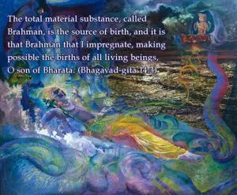
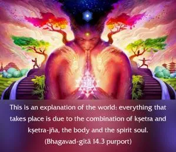
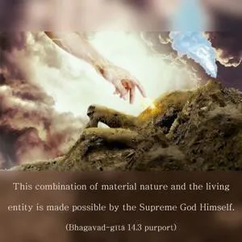
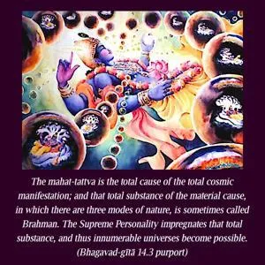
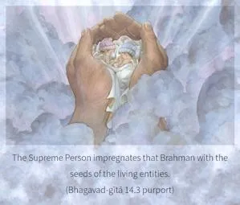
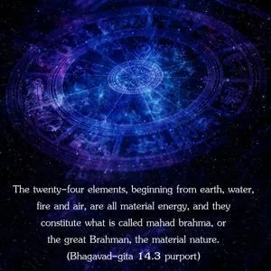

The total material substance, called Brahman, is the source of birth, and it is that Brahman that I impregnate, making possible the births of all living beings, O son of Bharata.






This is an explanation of the world: everything that takes place is due to the combination of kṣetra and kṣetra-jña, the body and the spirit soul. This combination of material nature and the living entity is made possible by the Supreme God Himself. The mahat-tattva is the total cause of the total cosmic manifestation; and that total substance of the material cause, in which there are three modes of nature, is sometimes called Brahman. The Supreme Personality impregnates that total substance, and thus innumerable universes become possible. This total material substance, the mahat-tattva, is described as Brahman in the Vedic literature (Muṇḍaka Upaniṣad 1.1.19): tasmād etad brahma nāma-rūpam annaṁ ca jāyate. The Supreme Person impregnates that Brahman with the seeds of the living entities. The twenty-four elements, beginning from earth, water, fire and air, are all material energy, and they constitute what is called mahad brahma, or the great Brahman, the material nature. As explained in the Seventh Chapter, beyond this there is another, superior nature – the living entity. Into material nature the superior nature is mixed by the will of the Supreme Personality of Godhead, and thereafter all living entities are born of this material nature.
The scorpion lays its eggs in piles of rice, and sometimes it is said that the scorpion is born out of rice. But the rice is not the cause of the scorpion. Actually, the eggs were laid by the mother. Similarly, material nature is not the cause of the birth of the living entities. The seed is given by the Supreme Personality of Godhead, and they only seem to come out as products of material nature. Thus every living entity, according to his past activities, has a different body, created by this material nature, so that the entity can enjoy or suffer according to his past deeds. The Lord is the cause of all the manifestations of living entities in this material world.